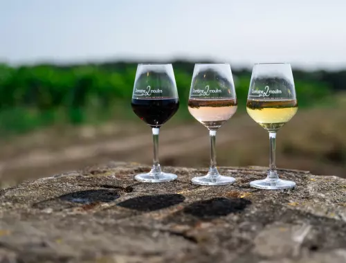
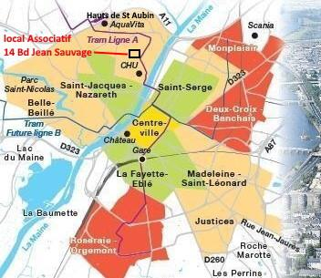

Le Club Œnologie d'Angers
Cours pour amateurs de vins
EN BREF : Actualités
Voici la pause estivale et l'occasion de faire quelques dégustations : Plusieurs chais organisent des visites et les rendez-vous habituels arrivent sur l'agenda. Nous vous recommandons les dégustations devant le château d'Angers qui débuteront par "Fan de Chenin" le 17 juillet et se termineront par la seconde soirée "Cointreau-Giffard" le 21 août. Il est fortement conseillé de réserver vos places sur le site. Le Château d'Épiré propose "la pause du jeudi" le 2 juillet. La jauge est bientôt pleine, il faut téléphoner directement pour réserver. A s'y rencontrer !

Présentation du Club
Vous habitez Angers et vous souhaitez suivre des cours d'oenologie ?
Le Club Oenologie d'Angers vous propose son programme annuel de formation.
Notre formule se distingue par son accessibilité financière, la rigueur de sa structure pédagogique et la grande qualité des intervenants professionnels, le tout au sein d'une atmosphère chaleureuse de club associatif.

-
Tout public Il s'adresse à tout public (un cours d'initiation à la dégustation qui ciblent les débutants).
-
Tarifs associatifs Les prix sont très accessibles (Club Associatif).
-
Grande qualité Les cours sont de grandes qualités.
-
Ambiance Professionnalisme et bonne humeur assurés !
-
Places limitées Les groupes sont limités à 45 personnes (le module d'oenologie est dédoublé compte tenu des demandes d'inscription).
Pourquoi nos cours se démarquent :
Conférenciers Oenologues
Les intervenants sont des oenologues passionnés et expérimentés.
7 à 9 Vins Dégustés
Une large sélection de vins est dégustée à chaque séance pour affiner votre palais.
Supports de Cours
Le contenu complet des conférences est systématiquement remis aux participants.
Format Convivial
La durée d'une conférence est de 3 h à 3 h 30, principalement programmée le vendredi soir.
LE PROGRAMME DU CLUB :
-
1 module d'initiation à la dégustation
Ce cours vous donnera les bases de la dégustation. Il est utile pour rejoindre le module d'oenologie.
-
1 module oenologie
Ce module vous permettra à travers "7 cours + 1 visite de chai + 1 repas accords-vins-mets" de découvrir ou d'approfondir vos connaissances dans le domaine du vin.
Il est destiné à toute personne, quel que soit son niveau : débutant, amateur, confirmé.
En quelques années, vous aurez acquis l'ensemble des notions nécessaire pour "savoir parler du vin". Libre à vous de ne suivre ce cours qu'une seule année.
Le contenu des cours change tous les ans. Il est choisi dans les thèmes suivants :
- Les cépages
- Les terroirs
- Notions de viticulture
- Notions de vinification
- Les régions viticoles françaises et étrangères
- Les différents labels : HVE, Terras Vitis, Biodynamie, ...
- Les accords vins-mets
- La biologie du vin
Détail des Modules
| Module | Dates & Horaires | Contenu | Tarif |
|---|---|---|---|
| Cours d'initiation à la dégustation | Septembre 2024, vendredi soir |
1 conférence + dégustation de 7 vins + le cours en pdf. Vous apprendrez à déguster les vins en utilisant votre sens visuel, olfactif et gustatif. Vous apprendrez également à mettre des mots sur un vin et à décrire ses arômes. La dégustation est ponctuée d'animations ludiques et est accompagnée de grignotages. |
35€ |
| Module d'oenologie | Octobre 2023 à Mars 2024, vendredi soir |
9 séances dont 7 cours + 1 visite de domaine + 1 repas accords-vins-mets. Thèmes : Les vins du Languedoc Roussillon, Les cépages oubliés, Les fines bulles, Les accords mets/vins, L'analyse sensorielle du vin. |
145€ |
Cours d'initiation à la dégustation
35€1 conférence + dégustation de 7 vins + le cours en pdf.
Vous apprendrez à déguster les vins en utilisant votre sens visuel, olfactif et gustatif. Vous apprendrez également à mettre des mots sur un vin et à décrire ses arômes. La dégustation est ponctuée d'animations ludiques et est accompagnée de grignotages.
Module d'oenologie
145€9 séances dont 7 cours + 1 visite de domaine + 1 repas accords-vins-mets.
Thèmes : Les vins du Languedoc Roussillon, Les cépages oubliés, Les fines bulles, Les accords mets/vins, L'analyse sensorielle du vin.
ORGANISATION DES COURS
Les cours se déroulent dans le Local Associatif 14 Bd Jean Sauvage, Hauts de St Aubin, (proximité Centre de réadaptation Les Capucins et ligne du Tram) ou, parfois, chez des viticulteurs proches d'Angers.
Ils ont lieu le vendredi soir de 20h à 23h30 et d'Octobre à Mars.
STRUCTURE D'UN COURS
- Étude d'un thème.
- Dégustation d'une appellation ou d'un cépage (L'appellation est soit en lien avec le thème du cours soit proposée par les participants).
Le Déroulement Typique d'une Séance
Les différentes étapes de la dégustation sont scrupuleusement respectées :
Analyse visuelle
Observer la robe, la limpidité et les reflets du vin.
Reconnaissance des saveurs et arômes
Identifier le nez (premier et deuxième nez) et les arômes.
Travail sur le vocabulaire associé
Acquérir les termes techniques pour décrire ses sensations.
Examen gustatif
Analyser l'attaque en bouche, l'équilibre, le corps et la longueur.
Accords mets et vins
Découvrir les harmonies et les alliances de saveurs.
La dégustation peut être précédée par des tests ludiques de reconnaissance d'arômes. Des outils spécifiques sont utilisés tels que les grilles de dégustation, verres INAO et des capsules d'arômes. Sept à neuf vins sont ainsi analysés pendant la séance. La dégustation est accompagnée par des en-cas préparés par les participants.
NOS CONFERENCIERS
Les cours sont animés par des oenologues, des enseignants de Lycées viticoles et des sommeliers.
ACTUALITES du MONDE DU VIN en ANJOU
Manifestations autour du vin en Anjou
Il existe beaucoup de manifestations autour du vin en Maine et Loire. Il peut s'agir de randonnées découvertes. Il y en a pour tout les goûts!
Soirées thématiques avec l'Apogée des Vins
Pascal Baruchi animera une soirée à la MFR de Chalonnes sur Loire (10 rue du 8 mai 1945) à 19 h 30. La participation est de 28 €.
Soirées dégustation devant le château d'Angers
Comme chaque année 6 soirées dégustation sont organisées. Elles ont lieu le vendredi soir de 18 h 30 à 21 h, les 17, 24 et 31 juillet, ainsi que les 7, 14 et 21 aout . Nous vous conseillons de réserver, la jauge est vite remplie! Il en coûte 12 € pour les 4 dégustations avec le verre et l'assiette d'amuses bouches.
Fan de Chenin débute cette nouvelle saison, 8 vignerons seront présents avec une animation musicale.
Les deux soirées coctails de Cointreau et Giffard ont lieu les 31 juillet et 21 aout.
La pause du jeudi au Château d'Épiré
Deux soirées afterwork au coeur de l'orangerie du Château d'Épiré sont organisées les jeudi 25 juin et 2 juillet à partir de 18 heures.
QUI SOMMES NOUS
Le Club Oenologie d'Angers
Il a été créé en 2001 par des passionnés et bons connaisseurs du monde viticole ligérien et avec la collaboration d'oenologues.
Les participants (90 en 2019) sont essentiellement originaires du département. L'age moyen est de 43 ans (2021). Certains participants, après plusieurs années de formation, intègrent des groupes de dégustation professionnels.
Il a pour vocation première de proposer des formations animées par des professionnels. Le programme de formation est évolutif : en 5 années, l'essentiel des thèmes oenologiques sont abordés.
Il est l'un des nombreux ateliers de « L'Association de Capucins ».
L'Association des Capucins
L'Association des Capucins est née en 1979.
Au début, simple regroupement d'habitants soucieux d'une bonne urbanisation du vaste plateau des Capucins (appelé aujourd'hui Hauts de St AUBIN), elle a rapidement répondu aux nombreuses attentes de ce quartier « décentré » du reste de la ville.
Longtemps relais unique de partenaires institutionnels, aujourd'hui elle travaille en collaboration avec la « Maison de Quartier des Hauts de St Aubin ».

Documents
Le CLUB met à disposition des documents d'information et des fiches techniques.
PROGRAMME DE FORMATION
-saison prochaine-PROGRAMME DE FORMATION
-saison en cours-PROGRAMME DE FORMATION
-saisons passées-Fiche de dégustation N°1
Méthodologie standardFiche de dégustation N°2
Méthodologie avancéeCarte des arômes Richard Pfisher
Classification aromatiqueLa roue des arômes du vin
Outil de dégustationL'analyse sensorielle
Méthodes & approchesLes principaux cépages
Fiches de synthèseContact
Une question, une inscription, une inscription « cadeau », laissez-nous un message, nous reviendrons vers vous rapidement.
(si vous avez un problème avec l'envoi de votre message sur cette page contact, nous vous invitons à nous contacter sur l'email du Club : oenocapucins@gmail.com)